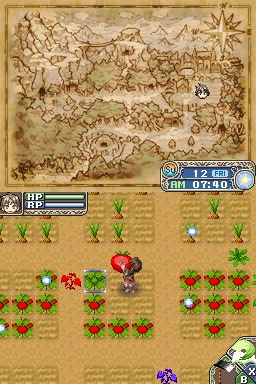

I have cycled through many hobbies throughout my life, but the two that I have consistently returned to are reading and gaming. I am not picky about genres when it comes to games. I can have a lot of fun with a Spongebob plug-n-play game or a AAA horror game. But the games that I've loved the most have included elements of life simulation.
Animal Crossing and Rune Factory fit this description. Although Animal Crossing exploded in popularity in 2020, it made its debut on the Nintendo 64 in Japan in 2001 as Dobutsu no Mori. Animal Crossing was eventually localized and released in North America on the Gamecube in the early 2000s. It has retained its cult following and reached viral status during the start of the COVID-19 pandemic.
Rune Factory has had a rockier path. The first iteration of the game, Rune Factory: A Fantasy Harvest Moon was released on Nintendo DS in 2006. Although it has not nearly reached the meme-level success of Animal Crossing, it holds an equally dear place in my heart.
